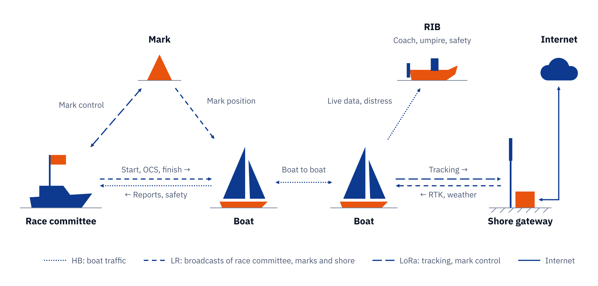

Open radio protocol for boats
OpenBoatLink (OBL) is an open radio protocol for boats. One radio link carries live tracking, electronic starts, umpiring support, coaching data and safety functions, and devices from different manufacturers work together.
Each boat carries a small device with satellite positioning and radio. Boats, marks, the race committee and coach boats receive each other directly, without internet.

What OBL gives you
| For | What OBL gives you |
|---|---|
| Sailors | Countdown and distance to the starting line on board. A signal to your boat if you are on the course side at the start (OCS). Live tracking and replay. |
| Race committees | Start sequence, recalls, course changes and finishes over one radio link that reaches every boat. |
| Umpires and coaches | Positions, headings and sensor data of the boats in real time. |
| Clubs and organisers | Affordable devices, no set-up on the boats, and one system from club racing to the Olympic Games. |
| Manufacturers | A public, royalty-free specification and a shared code library. |
Read and take part
- Read the specificationWhat OBL is for, what it must do and how it works, plus FAQ. Technical chapters follow.
- Ask a question or share an ideaOpen forum on GitHub Discussions. Reading is open to all; posting needs a free GitHub account.
- Report an errorCorrections and change requests to the specification, as GitHub issues.
- All files on GitHubSpecification, brand guide and licence.
- Contact by emailinfo (at) openboatlink.org
Status
Draft v0.7, 2026-11-17. Wording and values can change until version 1.0.